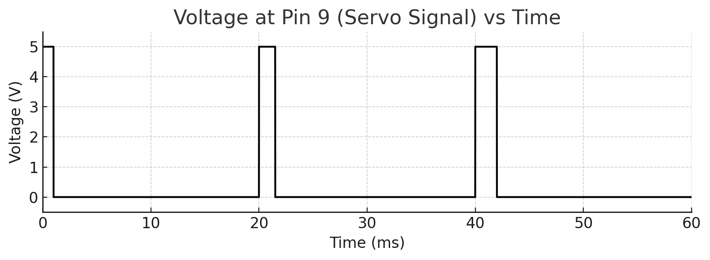

Overview
This project demonstrates how to use Arduino libraries to connect an ultrasonic sensor and an LCD display for real-time distance measurement. It focuses on translating sensor input into clear, readable output while learning to manage errors and noise in data collection.
Schematic (show values & calculation)

This schematic diagram shows the wiring connections between the ultrasonic sensor, LCD, and Arduino board. A 220 Ω resistor was used to limit current to the LEDs. Calculated using Ohm’s law: (5 V − 2 V) / 220 Ω ≈ 13 mA, which keeps the LED safely below its 20 mA rating.
Breadboard Circuit

This collage photo shows the complete breadboard circuit wiring for the ultrasonic sensor and LCD.
Firmware Code
// ----- Libraries -----
// Use the built-in LiquidCrystal library for parallel 16×2 LCDs
#include
// Use NewPing for reliable HC-SR04 timing and conversions
#include
// ----- LCD wiring (parallel) -----
// Map LCD pins RS, E, D4, D5, D6, D7 to Arduino pins 12, 11, 5, 4, 3, 2
const int rs = 12, en = 11, d4 = 5, d5 = 4, d6 = 3, d7 = 2;
// Create the LCD object with the above pin mapping
LiquidCrystal lcd(rs, en, d4, d5, d6, d7);
// ----- Ultrasonic wiring -----
// Define TRIG on D10
#define TRIG_PIN 10
// Define ECHO on D9
#define ECHO_PIN 9
// Set a reasonable max distance in cm (200 cm = 2 m)
#define MAX_DISTANCE_CM 200
// Make the NewPing sonar object
NewPing sonar(TRIG_PIN, ECHO_PIN, MAX_DISTANCE_CM);
void setup() {
// Initialize the LCD’s geometry (16 columns × 2 rows)
lcd.begin(16, 2);
// Show a quick splash so you know it booted
lcd.print("Ultrasonic (cm)");
// Short pause to read the splash
delay(800);
// Clear before live updates
lcd.clear();
}
void loop() {
// Take 5 pings and use the median to reduce random spikes
unsigned int uS = sonar.ping_median(5);
// Convert round-trip microseconds to centimeters
unsigned int cm = sonar.convert_cm(uS);
// Position cursor at first column, first row
lcd.setCursor(0, 0);
// Print a label
lcd.print("Distance: ");
// Move to the second row
lcd.setCursor(0, 1);
// If cm == 0, NewPing didn’t get an echo
if (cm == 0) {
// Show an out-of-range message
lcd.print("Out of range ");
} else {
// Print the distance value
lcd.print(cm);
// Print the unit and pad to clear any previous characters
lcd.print(" cm ");
}
// Update about 5×/sec
delay(200);
}
Operation GIF

This GIF shows the LCD displaying real-time distance measurements from the ultrasonic sensor.
Graph
Placeholder for graph showing sensor readings or relevant data over time for Assignment 4.
Questions
Question 1:
This graph shows the PWM signal at pin 9, where the 5 V pulse widens from about 1 ms to 2 ms as the servo moves from 0° to 180°.
Question 2:
We can handle a 1% erroneous reading by taking multiple samples and calculating the median or average value to ignore outliers. This ensures that occasional faulty readings do not affect the final measurement and keeps the data accurate and stable.
// Pseudocode
int getReliableReading() {
const int N = 5;
int samples[N];
for (int i = 0; i < N; i++) {
samples[i] = readSensor();
}
sort(samples, samples + N);
return samples[N / 2]; // median value
}
This code takes several readings from the sensor, sorts them, and returns the middle value (median). This method removes outliers to prevent occasional bad readings from affecting the results.
Question 3:
We can reduce the random ±10% noise by smoothing the sensor readings using a moving average or exponential filter. These methods average several recent values to make the output more stable and closer to the true measurement.
// Pseudocode
float filteredValue = 0;
const float alpha = 0.2; // smaller = smoother
int getSmoothedReading() {
int current = readSensor();
filteredValue = alpha * current + (1 - alpha) * filteredValue;
return (int)filteredValue;
}
This code smooths the sensor data by combining the new reading with a portion of the previous average. It filters out small random changes, making the readings steadier and more reliable.
Reflection
This project helped me better understand how to integrate input and output devices using Arduino libraries. I learned how to manage sensor noise, handle data errors, and display real-time information clearly. Overall, it improved my confidence in troubleshooting and refining circuits through testing and iteration.
AI Use Statement
I used AI tools to help create and visualize my data, as well as format this webpage.